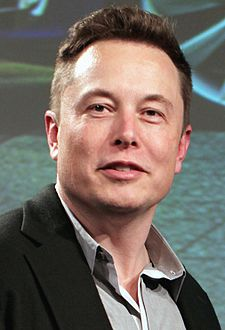

Elon Musk
Elon Musk je jedním z nejsledovanějších podnikatelů současnosti. Vedle podnikatele ho lze označit také jako vynálezce, investora a filantropa. Kromě toho, že stojí v čele firem SpaceX, Tesla a The Boring Company, přišel například s nápadem na Hyperloop a je spoluzakladatelem společností OpenAI a Neuralink. Dříve byl znám hlavně skrz firmu PayPal, jež vznikla spojením Muskovy společnosti X.com a konkurenční Confinity. Musk se narodil v Jižní Africe a má trojí občanství – jihoafrické, kanadské a americké.
Základní infromace:
- Celé jméno: Elon Reeve Musk
- Narozen: 28. června 1971
- Místo narození: Pretoria, RSA
- Současné bydliště: Los Angeles, USA
- Alma mater: Pensylvánská univerzita
- Rodinný stav: Rozvedený
- Děti: 6 synů (1 zemřel jako kojenec)
- Twitter: @elonmusk
Kariéra:
- Zip2 (1995) - internetový katalog, založený s bratrem
- X.com (1999) - stránky poskytující internetové finanční služby, později spojeny s PayPal
- SpaceX (2002) - soukromá vesmírná agentura s dlouhodobým cílem dostat lidi na Mars
- Tesla (2004) - společnost vyrábějící elektrické automobily
- SolarCity (2006) - firma poskytující solární systémy, spoluzaložena s bratranci
- OpenAI (2015) - nezisková společnost zaměřující se na výzkum umělé inteligence
- Neuralink (2016) - společnost zkoumající propojení lidského mozku s umělou inteligencí
- The Boring Company (2016) - firma na ražení tunelů, které by měly vyřešit dopravní zácpy